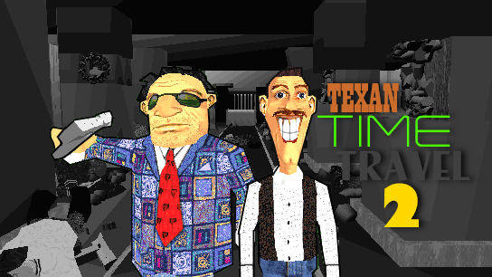
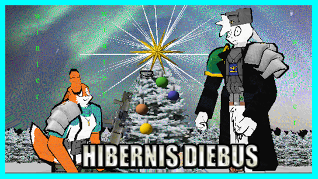

| Movie Name |
Synopsis |
Director |
Thumbnail/Watch |
| Plop Town |
North of the border, Plopilpy must navigate the complex worlds of adolescence, internet popularity, and Québécois sovereignty.
|
Old Rivers |
|
| Texan Time-Travel 2 |
Starting off right after TTT1, Oden and Owen find themselves in constant warfare as they can't catch a break. |
Pokerman |
 |
| Sgt. Steve: The Movie |
The story of a mentally retarded talk show drill seargent and his bizarre life involving romance, violence, manipulation, and 'Saved by the Bell' episodes. |
Jason Ruiz |
|
| Hibernis Diebus |
A NEW BEGINNING FOR A NEW YEAR! |
Pvt Sherman |
 |
| Plop Town 3: Plop Sprow |
Plop gets a visit from Jon Sprow when all of a sudden he shows a scary picture! |
Patryk "Jim" Kornatowski |
 |
| Cataclysmic Contentment |
The unfinished sequel to Diabolical Delightment. |
Will Maltby |
|
| Diabolical Delightment (Deleted Scenes) |
A collection of cut scenes from Diabolical Delightment. |
Will Maltby |
 |
| Jackson |
A movie following the story of a single $20 bill as it's exchanged between various people. |
Jason Ruiz |
 |
| Michael in Mexico 2 |
Another pointless action movie in mexico, however this time with a tiny bit of plot. |
Michael Sanford |
 |
| Chain Of Events |
The epic story of one man's quest to get to the bus stop, and everything else that happens around him. |
Directed By: 12 People |
 |